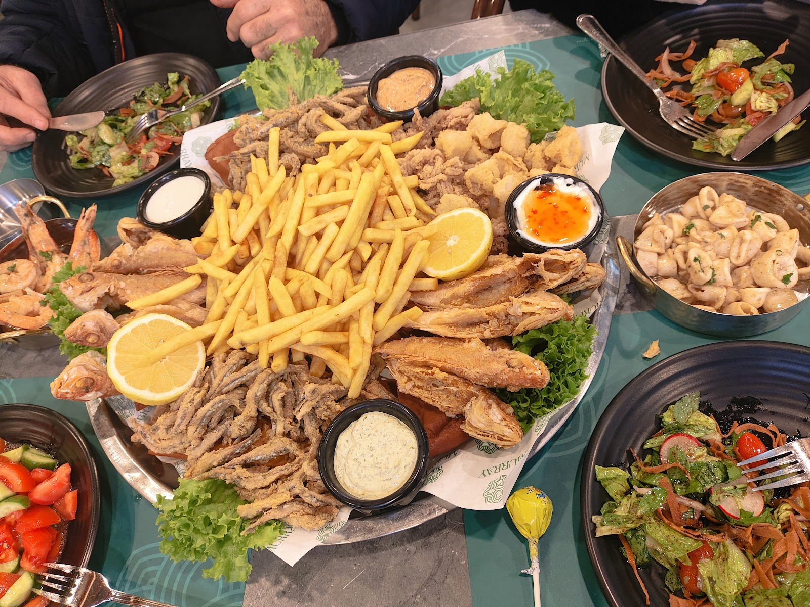
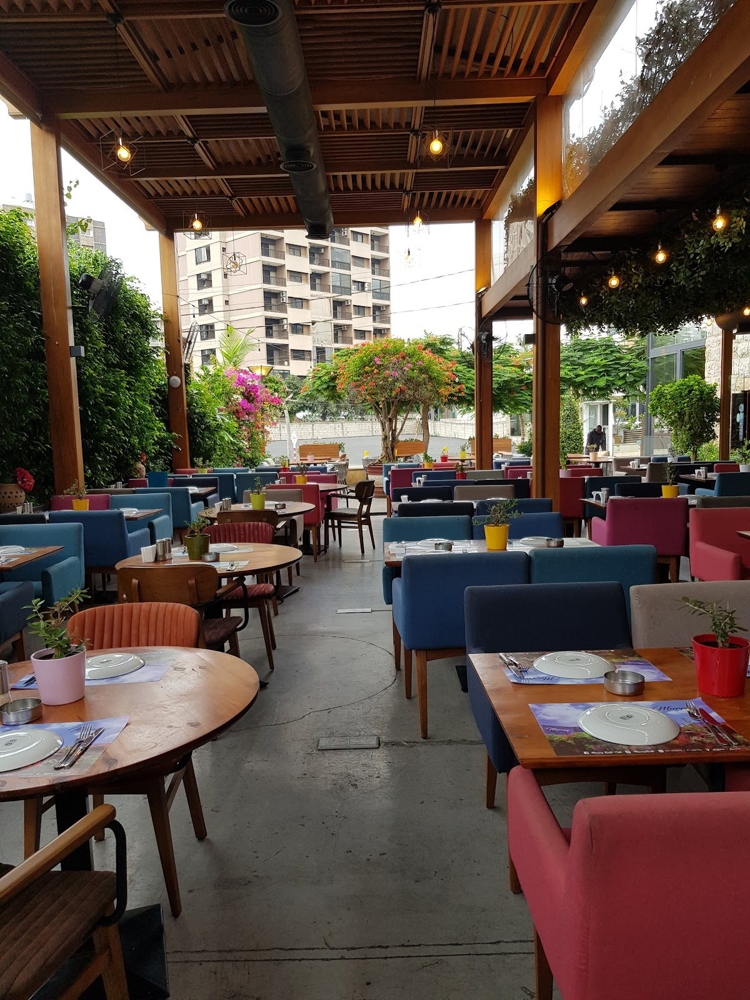
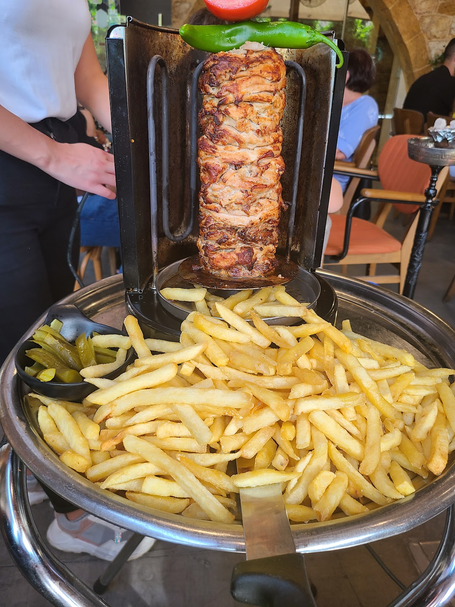
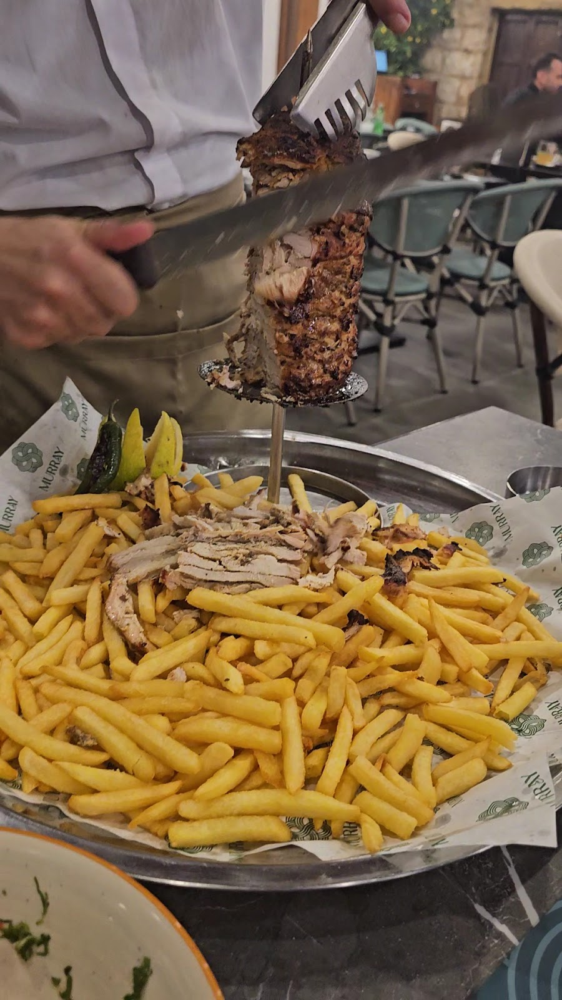
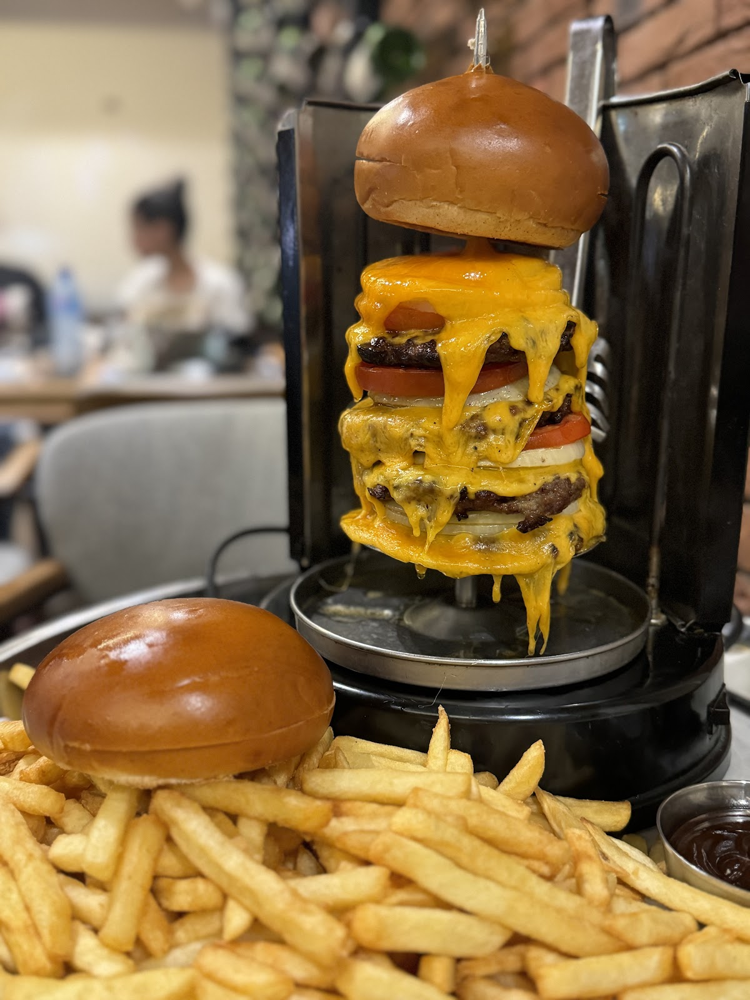
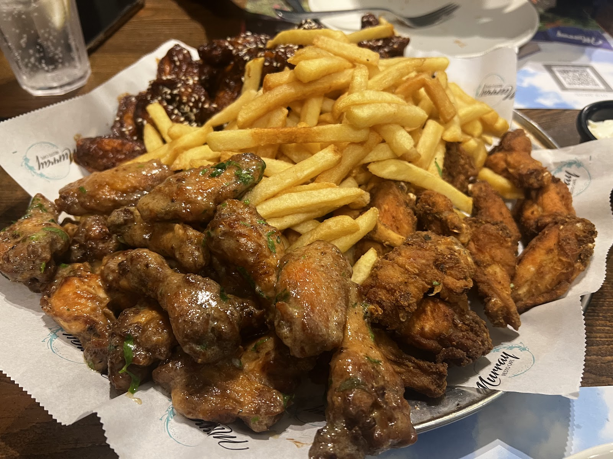
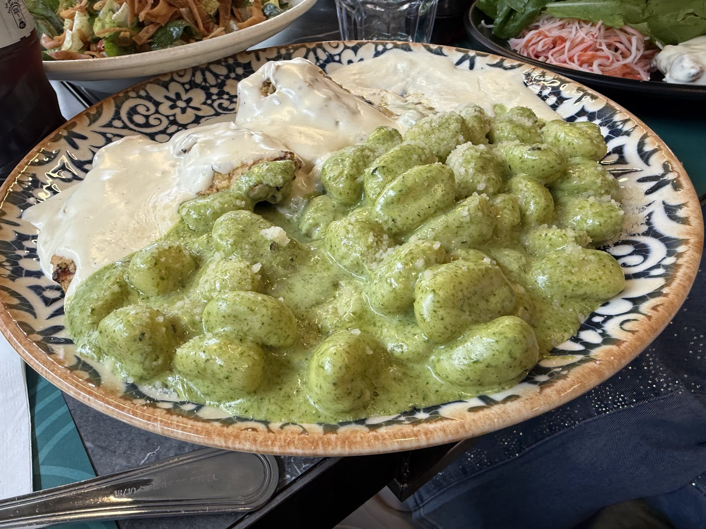
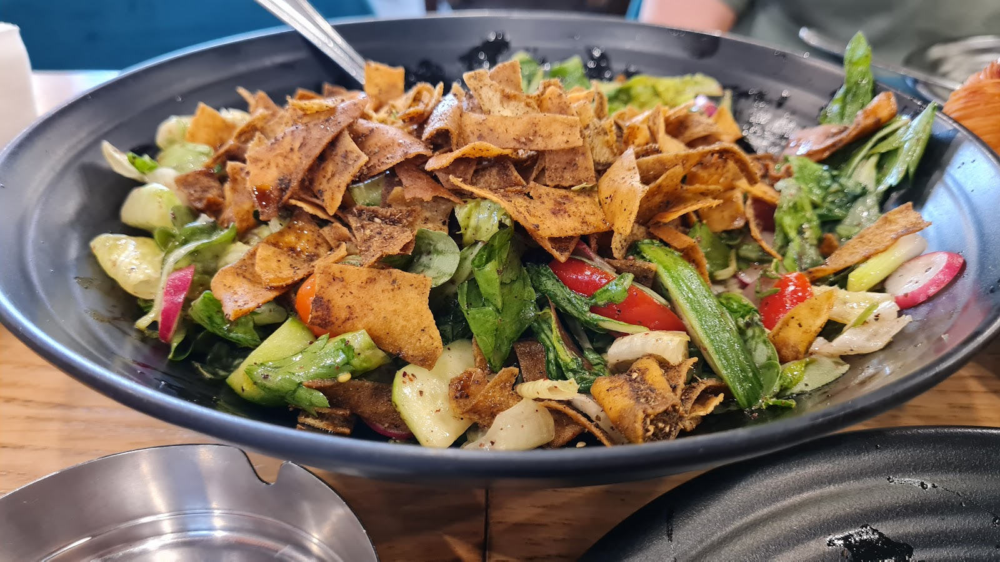

مطعم موراي
★ 4.3 ·







Murray Nachos
Crispy Halloumi
Sharing Delights
Baked Manti
Rkakat Cigar
Makanek
Murray nailed it! The chicken platter was packed with flavor and super satisfying. The chicken was delicious, tender, flavorful, and perfectly cooked.Larochka C.
Murray in Antelias is one of those places that works perfectly for gatherings, it’s spacious, lively, and has both indoor and outdoor seating, which makes it comfortable whether you’re going with family or friends.Hiba A
| 10 AM–3 AM | |
| 10 AM–3 AM | |
| 10 AM–3 AM | |
| 10 AM–3 AM | |
| 10 AM–3 AM | |
| 10 AM–12 AM | |
| 10 AM–12 AM |
Antelias restaurants street, Antelias, Lebanon
+961 4 444 213